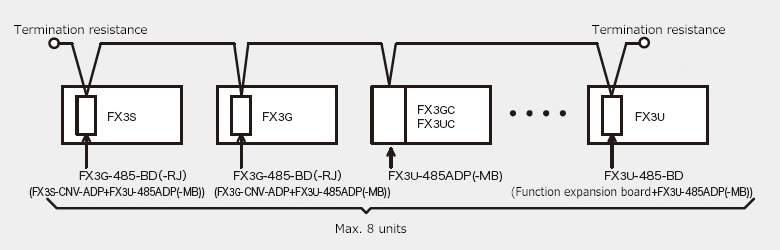

MELSEC-F series N:N Network

Features
- 1.Data link can be realized by a simple program with connecting up to 8 units of FX PLC.
- 2.The bit device (0 to 64 points) and word device (4 to 8 points) have been automatically linked among each station. The ON/OFF state of other stations and data register values can be obtained by the device allocated on the local station.
Applicable communication device
RS-485 communication device
| Model | Applicable FX PLC | ||||||||||
|---|---|---|---|---|---|---|---|---|---|---|---|
| FX 3S |
FX 3G |
FX 3U |
FX 3GC |
FX 3UC |
|||||||
| Function expansion board | FX3G-485-BD | *5 ○ Max. 1 unit |
○ Max. 2 units *1 |
× | × | × | |||||
| FX3G-485-BD-RJ | *5 ○ Max 1 unit |
○ Max. 2 units *1 |
× | × | × | ||||||
| FX3U-485-BD | × | × | ○ Max. 1 unit |
× | *2 ○ Max. 1 unit |
||||||
| Specific adapter | FX3U-485ADP-MB | *6 ○ Max. 1 unit |
*3 ○ Max. 2 units *1 |
*4 ○ Max. 2 units |
○ Max. 2 units |
*4 ○ Max. 2 units |
|||||
- *1FX3G 14 pt, 24 pt models: 1 board. 40 pt, 60 pt models: 2 boards.
- *2Can be connected only to the FX3UC-32MT-LT(-2).
- *3When connecting to FX3G, FX3G-CNV-ADP is required.
- *4When connecting to FX3U, FX3UC-32MT-LT(-2), function expansion board is required.
- *5Function expansion board and FX3S-CNV-ADP cannot be used together.
- *6When connecting to FX3S, FX3S-CNV-ADP is required.
System configuration example

Specifications
| Items | Specifications | |
|---|---|---|
| Transmission standard | Conforming to RS-485 standard | |
| Total extension length | When all communication modules used are special adapter: 500 m When function expansion board is used or included in system: 50 m |
|
| Communication method/Transmission speed | Half-duplex bidirectional, 38400 bps | |
| No.of connectable units | Max. 8 units | |
| Link points | Pattern 0 | Bit device: 0 points, Word device: 4 points (FX3S, FX3G, FX3U, FX3GC, FX3UC) |
| Pattern 1 | Bit device: 32 points, Word device: 4 points (FX3S, FX3G, FX3U, FX3GC, FX3UC) | |
| Pattern 2 | Bit device: 64 points, Word device: 8 points (FX3S, FX3G, FX3U, FX3GC, FX3UC) | |
| Link refresh time (ms) | Pattern 0 | Based on the no. of connection units, 2 units (18), 3 units (26), 4 units (33), 5 units (41), 6 units (49), 7 units (57), 8 units (65) |
| Pattern 1 | Based on the no. of connection units, 2 units (22), 3 units (32), 4 units (42), 5 units (52), 6 units (62), 7 units (72), 8 units (82) | |
| Pattern 2 | Based on the no. of connection units, 2 units (34), 3 units (50), 4 units (66), 5 units (83), 6 units (99), 7 units (115), 8 units (131) | |
| Connection device with PLC |
FX3S | FX3G-485-BD(-RJ) or FX3S-CNV-ADP + FX3U-485ADP-MB |
| FX3G | FX3G-485-BD(-RJ) or FX3G-CNV-ADP + FX3U-485ADP-MB | |
| FX3GC | FX3U-485ADP-MB | |
| FX3U, FX3UC* |
FX3U-485-BD or Function expansion board + FX3U-485ADP-MB | |
| Applicable FX PLC | FX3S, FX3G, FX3U, FX3UC | |
- *Function expansion board cannot be connected to FX3UC-**MT/D, FX3UC-**MT/DSS and FX3UC-16MR/D(S)-T. Specific adapter can be directly connected.